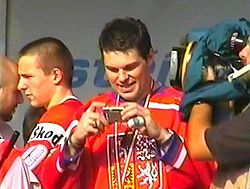

První neoficiální reprezentační zápas odehrál Jaromír Jágr 11. září 1989 proti Calgary Flames.
Jeho reprezentační kariéra začala 2. listopadu 1989 v Praze v přátelském utkání proti SSSR (1:2). Hráč jako junior získal stříbro na Mistrovství Evropy do 18 let 1989 v SSSR a bronz na juniorském světovém šampionátu 1990 ve Finsku. Na velké mezinárodní akci se v mužské kategorii Jágr poprvé objevil při Mistrovství světa ve Švýcarsku 1990, kde zaujal v útoku s dalšími mladíky – Robertem Reichelem a Robertem Holíkem. Československý výběr zde vybojoval bronzové medaile. Za Československo se představil ještě při Kanadském poháru 1991, kde však národní tým obsadil poslední šesté místo.
V roce 1998 přicestoval na Olympijské hry do japonského Nagana, kde poprvé v historii díky přerušení NHL hrály nejlepší výběry jednotlivých zemí a Česká republika zde slavila historicky poprvé zlatou medaili. Na Olympijských hrách v americkém Salt Lake City v roce 2002 bylo mužstvo vyřazeno ve čtvrtfinále Ruskem. Stejný soupeř opět ve čtvrtfinále vyřadil český výběr i na Mistrovství světa ve Švédsku 2002, kde se Jágr rovněž představil díky neúčasti jeho Washingtonu v play off NHL.
Počtvrté v kariéře si Jágr zahrál na mistrovství světa v roce 2004, které se konalo v Česku. I tentokrát byl tým vyřazen ve čtvrtfinále po samostatných nájezdech s USA. Trofej pro mistry světa tedy získal až o rok později při šampionátu ve Vídni, kde díky výluce v NHL nastoupily velmi silně složené týmy. Mezitím hrál i na Světovém poháru 2004, kde byl český tým vyřazen v semifinále. Po Olympijských hrách v Turíně 2006, kde český výběr získal bronz, Jágr prohlásil, že za reprezentaci bude hrát až po ukončení kariéry v NHL.
Nejproduktivnější evropský hráč v dějinách NHL tuto ligu opustil v roce 2008 a v nejbližších následujících letech nechyběl na žádné velké akci – zúčastnil se MS 2009 ve Švýcarsku, OH 2010 ve Vancouveru, zlatého MS 2010 v Německu i MS 2011 na Slovensku. Ačkoliv hrál v reprezentaci od roku 1989, svůj první hattrick zaznamenal až v roce 2011 na Mistrovství světa na Slovensku ve čtvrtfinálovém zápase proti USA, které český tým vyhrál 4:0. Na MS 2011 byl také vyhlášen nejlepším útočníkem podle direktoriátu turnaje a členem All-star teamu sestavovaného sportovními novináři. Po prohraném duelu o bronz na MS 2014 v Minsku oznámil ve 42 letech svůj konec v reprezentačním týmu, leč toto rozhodnutí ještě před domácím MS 2015, konaném v Praze a v Ostravě, přehodnotil. Na tomto šampionátu si Jágr připsal 9 bodů za 6 gólů a 3 asistence a stal se tak po Jakubu Voráčkovi druhým nejproduktivnějším hráčem českého výběru. Po šampionátu byl zvolen Nejužitečnějším hráčem (MVP) a také do All-star Teamu turnaje a následně oznámil ukončení reprezentační kariéry.
Trenéři národního týmu mu nabízeli možnost účasti na Mistrovství světa 2016, Jágr se ale po vypadnutí Floridy v prvním kole play off omluvil s odkazem na náročnou sezónu a celkovou únavu. Podobnou možnost měl i pro Světový pohár, ale i v tomto případě se na konci května 2016 rozhodl záporně.
